masuidrive-kbd v0.15.26
使い方
Androidへ追加し、フリック操作、かな漢字変換と次単語候補、絵文字レイヤー、端末内音声入力を使う手順です。入力と候補は端末内で処理します。
インストール
- GitHub Releasesからv0.15.26 APKをダウンロードします。
- ダウンロードしたgesture-ime-v0.15.26.apkを開き、Androidの案内に従ってインストールします。初回だけ、使用したブラウザまたはファイル管理アプリに「不明なアプリのインストール」の許可が必要な場合があります。
- インストール後に「masuidrive-kbd」を開きます。
v0.15.26は開発用のdebug署名で配布するARM64端末向けAPKです。Android 9（API 28）以上で動作します。セットアップ画面ではstatus barの下の固定バーから戻れ、設定内容だけをスクロールできます。
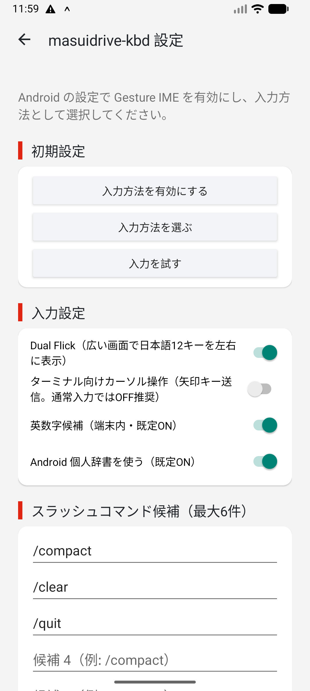
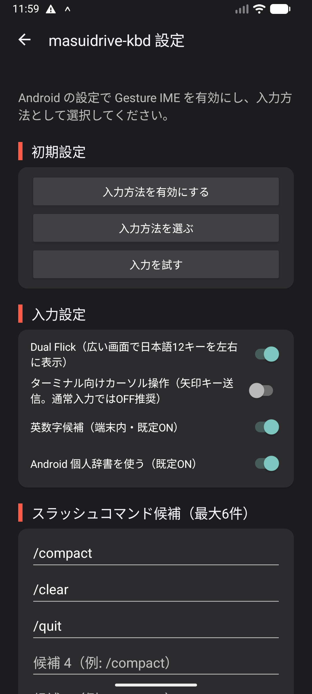
IMEを有効にする
- セットアップ画面からAndroidの「キーボードを管理」を開きます。
- 一覧にある「masuidrive-kbd」を有効にします。Androidが表示する注意を確認して続行します。
- 文字入力欄を開き、ナビゲーションバーのキーボード切替から「masuidrive-kbd」を選びます。
masuidrive-kbdはネットワーク権限を持ちません。通常入力とMozc変換は端末内で処理します。
Light / Dark表示を切り替える
masuidrive-kbd v0.15.26はAndroidの表示テーマへ自動で追従します。Androidの設定でLightまたはDarkへ切り替えると、キーボード、候補欄、フリックポップアップが同じテーマへ変わります。masuidrive-kbd側の設定操作は不要です。
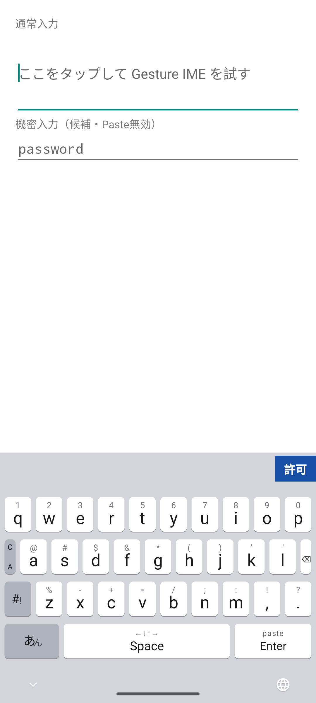
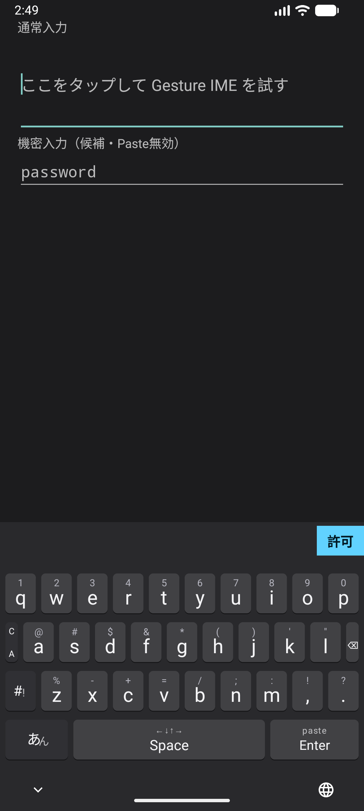
キーボードの高さを選ぶ
- masuidrive-kbdのセットアップ画面で「キーボードの高さ」を開きます。
- 「小」「標準」「大」から選びます。選択は次回のキーボード表示にも保存されます。
初期値の「標準」はキー4行で228dpです。「大」はスマホ幅で248dp、600dp以上の広い画面では従来のwide表示と同じ256dpです。選んだ高さはIMEの再表示やアプリ切替後も維持され、候補欄と画面下の安全領域はキー4行の外側に保たれます。
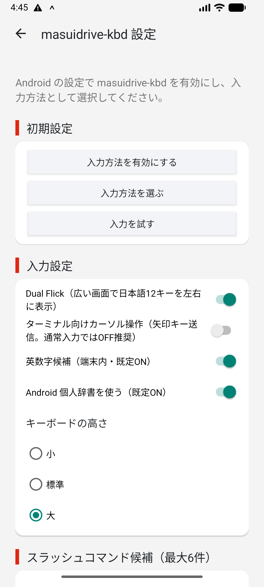
フリック感度を選ぶ
- masuidrive-kbdのセットアップ画面で「かな・テンキー」または「QWERTY・記号」のフリック感度を選びます。
- 「高い」「標準」「低い」から選び、次にキーボードを開いたときに反映されます。
二つの設定は独立しています。「高い」は短い移動でフリックを選び、「低い」は長い移動で選びます。初期値はどちらも「標準」です。今回の標準は24dpの移動でフリックを選べます。Spaceのカーソル移動、長押し、キーをタップできる範囲は変わりません。
製品ページの操作モックでも、上部の「かな・テンキー」と「QWERTY・記号」を別々に切り替え、同じ移動距離で選択の違いを試せます。
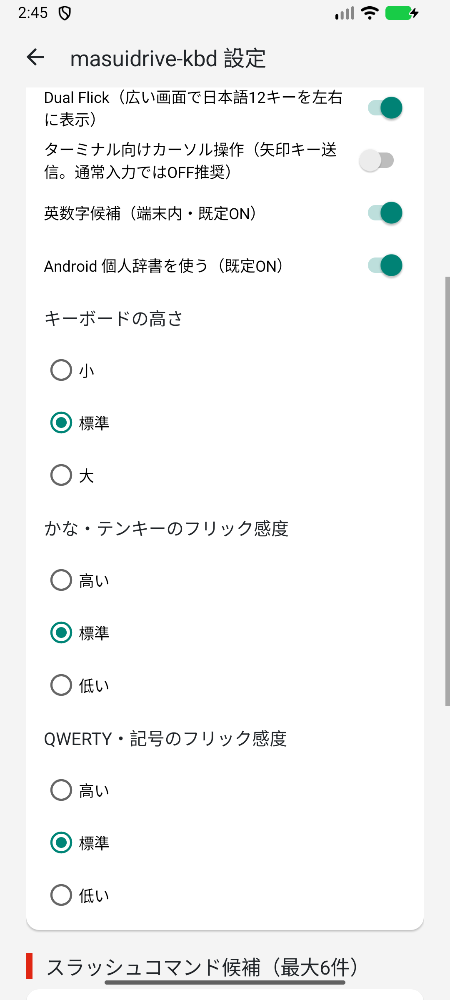
音声入力レイヤーで連続して入力する
- Android 12以降の対応端末で、masuidrive-kbdのセットアップ画面を開き、Androidの案内からマイクの使用を許可して入力欄へ戻ります。
- 左下のレイヤーキーを左へフリックします。方向が確定すると専用の音声入力レイヤーへ切り替わって認識を開始し、準備が整うと2回振動します。
- そのまま話します。認識を続けている間は、最下段の2列目に「認識中」とマイク入力に追従する小さな波形が表示されます。候補選択待ちや取消では波形が消えます。途中結果は入力欄へ入りません。しばらく無言になって認識が時間切れになっても、「認識中」のまま自動的に再開して次の発話を待ちます。
- 最下段は6等分です。左からキャンセル、認識中、句読点、Space、削除、Enterが並びます。候補がまだない状態、マイク権限未許可、端末非対応でもこの操作行は隠れません。句読点はtapまたは下フリックで「、」、左で「。」、上で「？」、右で「！」を直接入力します。削除はtapまたは未割当方向へのフリックで直前の1文字を消し、SpaceとEnterは他レイヤーと同じフリックを使えます。
- 最終結果は、通常の横候補欄ではなく固定された音声パネルに1行ずつ表示されます。最終結果がないときは、最後の有効な途中結果を選べます。複数候補では、候補同士で異なる文字だけが青い太字になります。候補をタップすると1回だけ入力され、一覧が消えて次の認識がすぐ始まります。
音声入力レイヤーの左下にある「キャンセル」をタップすると、候補が空の状態でも認識と未確定候補を破棄して元のレイヤーへ戻ります。同じキーは上で日本語、右でQWERTY、下でテンキーへ切り替えられます。端末内の日本語音声認識サービスと日本語モデルが必要で、通信型認識へは切り替わりません。無音による時間切れ以外の認識エラーと端末内モデル不足は、音声パネルにタップできないテキストで表示し、自動再試行しません。パスワード欄では音声入力を開始しません。録音音声と認識結果は保存しません。
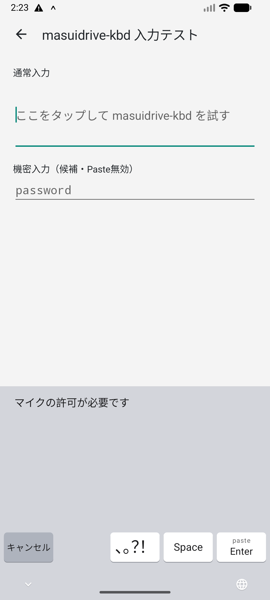
操作モックでは実マイクを使わず、途中結果から複数の最終候補または選択可能な途中結果へ変わり、最下段の直接入力をしても候補を維持し、候補を選ぶたびに次の認識へ戻る流れを試せます。
レイヤーを切り替える
左下のレイヤーキーは、現在の表示にかかわらず同じ方向へ移動します。中央の文字はタップ時の移動先です。記号レイヤーは各レイヤー左端の「?}」をタップして開きます。
入力欄を開くと、数字・電話番号・日時ではテンキー、URL・メールアドレス・パスワード・ASCII強制欄ではQWERTYが最初に表示されます。通常の文章欄と未指定の入力欄は、最後に手動で選んだレイヤーを開きます。自動選択だけでは保存済みレイヤーを変更しません。
テンキーの`-`はタップで`-`、左フリックで`+`、上で`/`、右で`*`、下で`,`を入力します。`.`はタップで`.`、左で`,`、右で`=`を入力し、上・下には文字を割り当てません。両キーには割当済み方向をキー内に表示します。未割当方向へ指がずれた場合は、選択表示を変えず、離すと中央タップの文字を一度だけ入力します。
| 操作 | 動作 |
|---|---|
| 左フリック | 音声入力レイヤー |
| 上フリック | 日本語 |
| 右フリック | QWERTY |
| 下フリック | テンキー |
| あんをタップ | 日本語 |
| AZをタップ | QWERTY |
| ?}をタップ | 記号 |
広い画面でDual Flickを使う
- Dual Flickは初期状態で有効です。設定を変える場合はmasuidrive-kbdのセットアップ画面を開きます。
- タブレット表示など横幅の広い画面で日本語レイヤーを開くと、かな12キーが左右に1組ずつ表示されます。Foldなら、閉じたスマホ表示と開いたタブレット表示の両方で使えます。
- 左右どちらからでも同じ読みへ入力できます。狭い画面では設定を保ったまま、自動的に通常の1組表示へ戻ります。
Dual Flickの初期設定はONです。数字、記号、候補欄、Space、Enterなどの編集キーは複製されません。
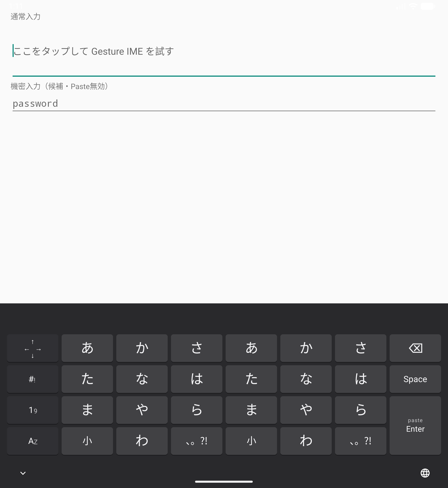
日本語を入力して変換する
かなキーをタップすると中央、上下左右へ動かすと各方向のかなが入ります。たとえば「あ」は中央が「あ」、左が「い」、上が「う」、右が「え」、下が「お」です。同じキーを続けて押しても文字が置き換わらず、入力した回数だけ追加されます。
- 左下キーを上へフリックして「日本語」を開きます。
- かなを中央または四方向から選びます。入力中の読みと変換候補が上段に表示され、Spaceキーは「候補」と表示されます。
- 「候補」をタップして先頭候補を選びます。続けてタップすると次の候補へ進みます。候補を選ぶ前のEnterは「無変換」で、入力中のひらがなをそのまま確定します。
- 候補を選ぶとEnterが「確定」に変わります。「確定」をタップすると選択中の候補が入力欄へ確定されます。候補欄の目的の候補を直接タップして、すぐ確定することもできます。読みが変わると候補欄の横位置は先頭へ戻ります。
- 確定後に次単語候補が出たら、入力したい語をタップします。直前の確定文字は置き換わらず、選んだ語が続けて入り、その後の候補に更新されます。
「小」キーはタップで直前のかなを変換可能な形へ順番に切り替え、上・左で濁点、右で半濁点へ直接切り替えます。変換中のEnterは候補の選択前後とも、左または上フリックで全角カタカナをそのまま確定します。次単語候補は次のかな入力、カーソルまたは入力欄の変更で消えます。読みがないときのSpaceは空白、変換中でないときのEnterは入力欄の指定アクションまたは改行になります。
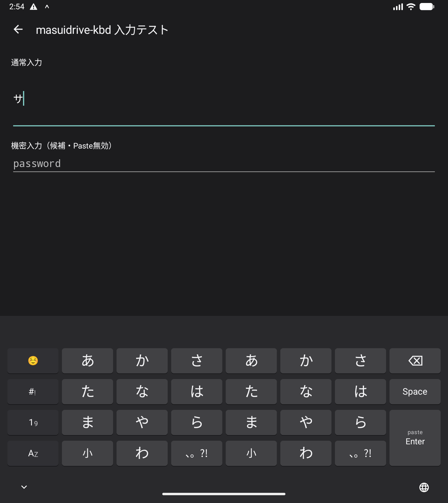


変換学習とAndroid個人辞書を使う
Mozcの変換学習
通常の入力欄で確定した日本語候補は端末内のMozc履歴へ保存され、次回以降の候補順位に反映されます。不要な学習候補は候補を長押しすると、その候補のMozc履歴から削除できます。Android個人辞書由来の候補は長押しで削除されません。
Android個人辞書
- Androidの個人辞書で、単語と読みとして使うショートカットを登録します。
- 「Android 個人辞書を使う」は初期状態で有効です。設定を変える場合はmasuidrive-kbdのセットアップ画面を開きます。
- 日本語レイヤーでショートカットと同じ読みを入力すると、登録語がMozc候補の前へ表示されます。
日本語ロケールまたはロケール未指定の登録語を最大6件参照します。Androidが現在のIMEへ個人辞書Providerを提供しない端末や、Providerへのアクセスを拒否した状態では、設定がONでも個人辞書候補を表示せず、通常のMozc候補だけを表示します。個人辞書をmasuidrive-kbd内へ複製せず、ネットワークへ送信しません。パスワード欄と学習禁止指定の入力欄では、候補、学習、個人辞書参照を行いません。
QWERTYで英字と記号を入力する
| 操作 | 入力 |
|---|---|
| 英字キーをタップ | 小文字 |
| 英字キーを上へスワイプ | その一文字だけ大文字 |
| 英字キーを下へフリック | キー上部の数字またはASCII記号 |
| C/Aを上へフリック | 次の一キーへAltを適用 |
| C/Aを下へフリック | 次の一キーへCtrlを適用 |
| Enterを上へフリック | Paste |
| Enterを下へフリック | Ctrl+J |
| 2行目右端の.をタップ | . |
| 2行目右端の.を下へフリック | ? |
| 3行目右端のBSをタップ | 一文字削除 |
| 3行目右端のBSを下へフリック | Esc操作 |
| 3行目右端のBSを左・上・右へフリック | 一文字削除 |
QWERTYの2行目右端は0.5wの`.`で、タップは`.`、下フリックは`?`です。3行目右端は1wのBSで、タップは削除、下フリックはEsc、左・上・右は通常の削除タップとして扱います。記号レイヤー3行目のTabは右端です。Enterの待機中は上にC-j、中央にEnter、下にpasteを表示します。上フリックでPaste、下フリックでCtrl+Jを送ります。QWERTYと記号レイヤーを合わせると、Spaceを含む印字可能ASCII 95文字をすべて入力できます。「-」はQWERTYのx下フリックと記号レイヤー、「`」は記号レイヤー、「:」はQWERTYのm下フリックにあります。記号レイヤーの`Esc`と`Tab`はタップでそれぞれのAndroidキーイベントを送ります。記号レイヤーの文字キーには方向フリックを割り当てていません。C/A選択後は背景色が変わり、次の一キーへ適用すると解除されます。
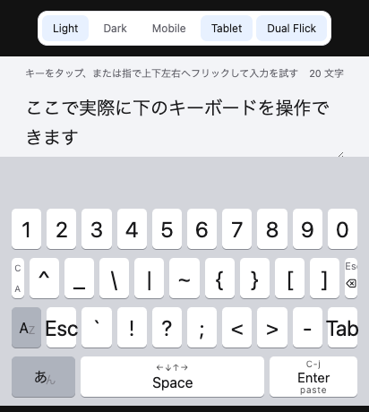
英字候補を使う
- 英数字候補は初期状態で有効です。設定を変える場合はmasuidrive-kbdのセットアップ画面を開きます。
- 半角の英字・数字を続けて入力すると、未確定のまま保持します。英字だけのときは、その文字で始まる単語を候補欄へ最大5件表示します。数字が混ざると候補は表示しません。候補が表示されても入力した文字は変わりません。
- 候補をタップすると、入力中の英字を選んだ単語で置き換えて確定します。
入力中にSpaceを押すと、その英字・数字を変更せず確定してから空白を入力します。Enterを押すと英字・数字だけを確定し、この場合は改行や送信を追加しません。入力中の英字・数字がないときのEnterは従来どおりです。パスワード欄では候補を表示しません。
候補は端末内の固定英単語辞書から生成します。入力履歴の学習、個人辞書、ネットワーク送信、クラウド同期はありません。入力した大文字と小文字は候補にも保たれます。
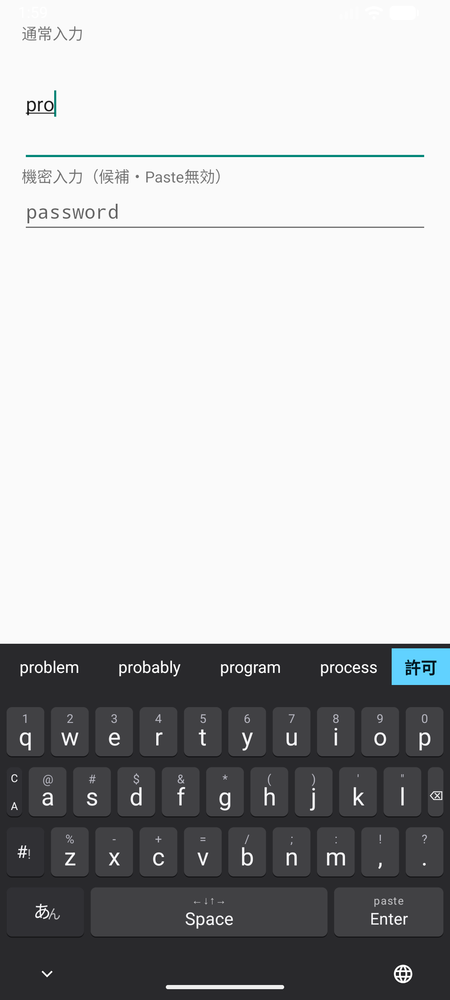
スラッシュコマンド候補を使う
- QWERTYで「/」を入力します。初期設定では「/compact」「/clear」「/quit」が候補欄に表示されます。
- 候補をタップすると、入力中の「/」を選んだコマンドで置き換えて確定します。候補を選ばなければ「/」のまま入力できます。
- 候補を変える場合は、masuidrive-kbdのセットアップ画面にある6個の欄を編集します。先頭の「/」は省略しても自動で補われ、空欄と同じ候補の重複は表示されません。
スラッシュ候補は英数字候補のON/OFFにかかわらず使えます。パスワード欄などの機密入力では表示しません。
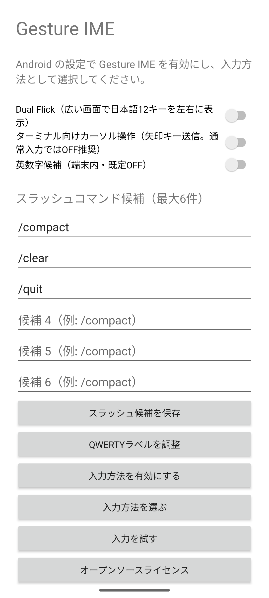

絵文字、カーソル、削除、Paste
絵文字レイヤー
日本語・テンキー左上の☺で絵文字を開きます。開くたびにRecentから一覧先頭を表示します。カテゴリ行の下は左端にあ、?}、19、AZが縦に並び、その右は最下段まで4行7列の一覧です。wide画面では7分割した各slotの中央へ絵文字を揃え、一覧領域の左右余白を均等にします。縦scrollとvariation長押しを利用でき、絵文字レイヤーに削除キーはありません。Recentは端末内へ最大100件保存し、private入力欄では表示・保存しません。
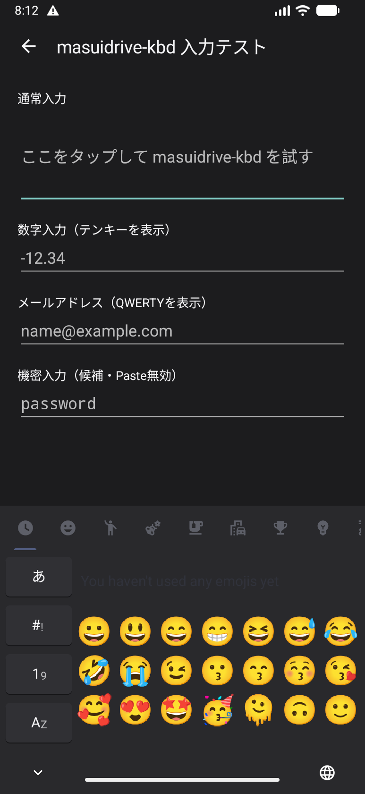
キーボードを閉じる
独自のキーボードを閉じる行はありません。AndroidのOS操作でIMEを閉じます。
Spaceトラックパッド
Spaceを押したまま指を動かすと、カーソルを移動できます。通常の入力欄では選択位置を直接変更します。抽出テキストを提供しない、または選択位置変更を拒否する非private入力先だけ、対応するDPAD矢印キーへ自動的に切り替えます。private入力欄では自動的に矢印キーを送りません。
ターミナル向けカーソル操作
自動fallbackでも反応しないターミナルアプリでは、セットアップ画面の「ターミナル向けカーソル操作」を有効にします。成功応答を返しながら移動を無視する入力先はAndroid側から判別できないため、この設定で非private入力先への矢印キー送信を強制します。private入力欄では自動fallbackでもこの手動設定でも矢印キーを送りません。初期設定はOFFです。
Enterの上下フリック
変換中でないEnterを上へフリックすると、クリップボード先頭のテキストを貼り付けます。パスワード欄ではPasteを無効にします。下へフリックするとCtrl+Jをキーイベントとして送ります。変換中は中央の無変換・確定と、左または上フリックのカタカナ確定を維持します。
v0.15.26で変わったこと
- フリック確定までの移動を全3段階で長くしました。高い16dp、標準24dp、低い32dpの移動で方向を選べます。高いは前版の標準と同じ距離です。
- 二つの設定は引き続き独立して保存され、Spaceのカーソル移動や音声・絵文字の操作は変わりません。
- 製品ページの操作モックも同じ感度に揃えました。
以前の版はGitHub Releasesから利用できます。
v0.15.26の制約
- 次単語候補は通常の入力欄だけで利用できます。パスワード欄と学習禁止指定の入力欄では、周辺文字列を取得せず候補も表示しません。
- Android個人辞書はショートカットを読みとして登録した日本語またはロケール未指定の語だけを候補へ加えます。辞書の追加・編集・削除はAndroid設定で行います。
- 他サービスの会話ログ取り込み、端末間同期、クラウドバックアップはありません。
- 音声入力はAndroid 12以降が対象です。端末内認識サービスまたは日本語モデルが導入されていない端末では利用できません。
- エミュレーターで日本語モデルがない場合の非対応テキスト表示を確認しています。実際の日本語発話と途中結果は実機確認待ちです。
- スマホ幅相当412dp、タブレット幅相当840dpをエミュレーターで確認しています。Fold実機での最終検証は未実施です。
- 配布APKはARM64向けです。
- 操作モックはジェスチャーと画面遷移の参考用です。入力欄は読み取り専用で、音声入力はマイクを使わず、途中結果と確定だけを再現します。候補生成には小さな説明用辞書を使い、Mozc学習とAndroid個人辞書は再現しません。